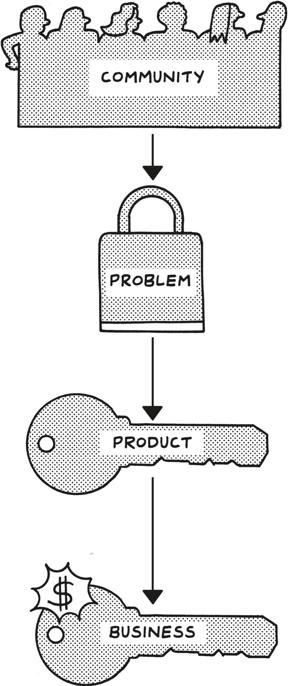

In 2009, Sol Orwell was overweight and unhappy, so he decided to join the “r/Fitness” subreddit, one of the thousands of smaller online communities within Reddit, to find information and support. At the same time, he started reading about fitness and nutrition, taking notes on what he was learning in books like Tim Ferriss’s The 4-Hour Body and posting summaries on the fitness subreddit for other members of the community. Reddit was a natural place for Orwell to seek connection. He was already participating in the NBA and Toronto subreddits, among others, so he knew and understood Reddit’s rules and norms about posting only authentic, useful content.
2009 年，Sol Orwell 超重且不快乐，于是他决定加入“r/Fitness”子版块，这是 Reddit 上成千上万个小型在线社区之一，以寻找信息和支持。同时，他开始阅读关于健身和营养的书籍，并在像 Tim Ferriss 的《4 小时身体》这样的书中做笔记，并在健身子版块上为其他社区成员发布总结。Reddit 是 Orwell 寻求联系的自然场所。他已经参与了 NBA 和多伦多的子版块，因此他了解并理解 Reddit 关于只发布真实、有用内容的规则和规范。
The more he learned about fitness and nutrition, the more he shared. In addition to his reading notes, he inspired others by answering questions and documenting his personal journey of losing sixty pounds, which occurred over a period of several years. He credits his physical transformation to the relationships he formed with other “redditors,” including Kurtis Frank, one of the moderators of r/Fitness. Eventually, Sol and Kurtis ended up moderating the subreddit together, and as time went by, they noticed two persistent problems.
他对健身和营养了解得越多，他分享得也越多。除了他的阅读笔记，他还通过回答问题和记录自己在几年内减掉六十磅的个人旅程来激励他人。他将自己的身体转变归功于他与其他“redditors”建立的关系，其中包括 r/Fitness 的版主之一 Kurtis Frank。最终，Sol 和 Kurtis 一起管理这个子版块，随着时间的推移，他们注意到两个持续存在的问题。
First, little reliable information was available about nutritional supplements, either from other redditors or from the companies that made these products; second, almost every day, new members asked the same questions over and over again, many times about supplements. Sol was frustrated by both situations, but eventually he realized that maybe the resources people needed just weren’t out there.
首先，无论是来自其他 Reddit 用户还是生产这些产品的公司，关于营养补充剂的可靠信息都很少；其次，几乎每天都有新成员反复问同样的问题，很多时候是关于补充剂的。Sol 对这两种情况都感到沮丧，但最终他意识到，也许人们需要的资源根本不存在。
Sol and Kurtis saw a job to be done for a community that they cared about and had nurtured from five thousand to about fifty thousand during the two years they had been moderating. In 2011, they launched Examine.com, a website where people could find the kind of free, unbiased, up-to-date research and information on nutrition and supplements that they themselves had been looking for.
Sol 和 Kurtis 看到他们关心的社区有一项工作需要完成，他们在担任版主的两年间将社区从五千人发展到大约五万人。2011 年，他们推出了 Examine.com，一个网站，人们可以在这里找到他们自己一直在寻找的那种免费、公正、最新的营养和补充剂研究和信息。
They told people about their project, but they didn’t sell anything, and they only occasionally dropped links in the fitness subreddit when they were answering questions. Instead, other members of the community did it for them. After all, they had been part of Reddit at this point for about five years. Sol remembers they both had something like “100,000 plus karma,” a measure of how much a user has contributed to Reddit based on upvotes and comments from other users—so people trusted them, and they were solving a problem for the fitness subreddit without asking for anything in return.
他们告诉人们他们的项目，但他们没有卖任何东西，只是在回答问题时偶尔在健身子版块中放一些链接。相反，社区的其他成员为他们做了这些。毕竟，到那时他们已经在 Reddit 上活跃了大约五年。Sol 记得他们两人都有“10 万以上的业力”，这是根据其他用户的点赞和评论来衡量用户对 Reddit 贡献的指标——所以人们信任他们，他们在为健身子版块解决问题，而不要求任何回报。
In 2013, two years after they started the site, they started to think about monetizing, so they surveyed the community about what problems they believed the information on Examine.com might be able to solve. “We would ask people, ‘What’s your problem? What do you wish you could do?’ ” Sol remembers. “The most common thing was ‘We wish you just had a table of all of the information you have. So if I wanted to look at supplements that affect blood pressure, I could look it up quickly.’ ” Because of those answers, they offered their first product, the Research Digest, a comprehensive guide to supplements and nutrition.
2013 年，在他们创建网站两年后，他们开始考虑盈利，于是他们调查了社区，询问大家认为 Examine.com 上的信息可能解决哪些问题。Sol 回忆道：“我们会问人们，‘你的问题是什么？你希望能做些什么？’” 最常见的回答是“我们希望你们能有一张包含所有信息的表格。这样如果我想查找影响血压的补充剂，我可以快速查到。” 因为这些回答，他们推出了第一个产品，Research Digest，一本关于补充剂和营养的综合指南。
Sol was well known in the health and nutrition space, and to promote the Research Digest, he leveraged his relationships with fitness professionals four years after initially joining the fitness subreddit. When he and Kurtis launched, 105 people in the fitness industry shared the link. The goal was a thousand sales, and by the end of the first day they had already sold six to eight hundred copies. By the end of the launch, they had sold three thousand copies, all based on reputation, trust, and word of mouth.
Sol 在健康和营养领域非常有名，为了推广 Research Digest，他利用了自己与健身专业人士的关系，这距离他最初加入健身 subreddit 已有四年。当他和 Kurtis 推出产品时，健身行业的 105 人分享了链接。目标是销售一千份，而在第一天结束时，他们已经卖出了六到八百份。到发布结束时，他们共售出了三千份，完全依靠声誉、信任和口碑。
Fast-forward to today, and Sol is happy, healthy, and wealthy. Examine.com continues to be an important resource for health and nutrition professionals; it has seventy thousand visitors per day and does seven figures in annual revenue, though Sol has since stepped back from the day-to-day operations. The team has expanded Examine’s offerings to include additional guides and subscription services on how supplements factor not only into fitness but also into longevity, chronic disease, and psychological health. But they’ve never lost their focus on community and continue to depend on the trust and relationships that grew authentically over time.
快进到今天，Sol 既快乐又健康，还很富有。Examine.com 仍然是健康和营养专业人士的重要资源；每天有七万名访客，年收入达到七位数，尽管 Sol 已经不再参与日常运营。团队扩展了 Examine 的产品，包括关于补充剂如何不仅影响健身，还影响长寿、慢性疾病和心理健康的额外指南和订阅服务。但他们从未失去对社区的关注，继续依赖随着时间自然增长的信任和关系。
In this chapter, we’ll talk about how you can find your own communities (if you haven’t already) and how to uncover the kinds of problems that might be best suited for a minimalist business. I won’t lie. This process takes time, but done right and, most of all, done authentically, it will be the basis of how you move forward now and for years to come. Whether you’re just getting started or you’re already in the process of building a product, knowing and contributing to your community is key at every stage. Remember that, and you’ll find and nurture the right atmosphere for collaboration, growth, and eventually a sustainable business that matters.
在本章中，我们将讨论如何找到自己的社区（如果你还没有找到的话），以及如何发现最适合极简主义商业的问题类型。我不会撒谎，这个过程需要时间，但如果做得对，最重要的是，做到真实，它将成为你现在以及未来几年前进的基础。无论你是刚刚起步，还是已经在构建产品的过程中，了解并为你的社区做出贡献在每个阶段都是关键。记住这一点，你将找到并培育出适合合作、成长的正确氛围，最终建立一个有意义的可持续业务。
Community First
社区优先
Community is a fundamental societal unit. From Sol’s r/Fitness subreddit to yoga classes to family to the group of friends we game with in the middle of the night, communities are a place where we can connect, learn, and have fun. For minimalist entrepreneurs, communities are the starting point of any successful enterprise.
社区是一个基本的社会单位。从 Sol 的 r/Fitness 子版块到瑜伽课，再到家庭，以及我们在深夜一起游戏的朋友群，社区是我们可以连接、学习和娱乐的地方。对于极简主义企业家来说，社区是任何成功企业的起点。
That doesn’t mean you should run out and find a community to join just for the purpose of starting a business. It means that most businesses fail because they aren’t built with a particular group of people in mind. Often, the ones that succeed do so because they’re focused on a community that a founder knows well. That process can’t be rushed because it comes from authentic relationships and a willingness to serve, both of which take time to uncover and develop. You may even have to learn a new language—or at least some insider lingo.
这并不意味着你应该为了创业而急于寻找一个社区加入。这意味着大多数企业失败是因为它们没有针对特定的人群来建立。通常，那些成功的企业是因为它们专注于创始人熟悉的社区。这个过程不能急于求成，因为它源于真实的关系和服务的意愿，而这两者都需要时间去发现和发展。你甚至可能需要学习一门新语言——或者至少一些内部术语。
Communities used to be limited by geography, but it’s never been easier to connect to people with whom you share something in common, whether it be an interest, a favorite artist, or a belief system. But a community isn’t a group of people who all think, act, look, or behave the same. That’s a cult.
社区过去常常受到地理限制，但现在与有共同兴趣、喜爱的艺术家或信仰体系的人联系从未如此容易。但社区并不是一群思维、行为、外貌或举止完全相同的人。那是一个邪教。
A community is the opposite. That’s what I discovered when I moved from San Francisco to Provo and got out of the Silicon Valley bubble. For one of the first times in my life, I saw that the best communities are made up of individuals who might be otherwise dissimilar but who have shared interests, values, and abilities. It’s a group of people who would likely never hang out with each other in any other situational context, and it often encompasses virtually every identity, including, yes, politics.
社区则相反。这是我从旧金山搬到普罗沃并走出硅谷泡沫时发现的。人生中第一次，我看到最好的社区是由可能在其他方面不同但拥有共同兴趣、价值观和能力的个体组成的。这是一群人在其他情境下可能永远不会聚在一起的人，通常涵盖几乎所有身份，包括政治。
A community can override people’s dislike of one another. Every Sunday in the Latter-day Saints Church, I saw the progressive next to the conservative, the rich next to the poor, the young next to the old. I’m not sure what they thought of each other outside the church building, but for at least one day a week, they sat together for the sake of the community.
社区可以超越人们之间的厌恶。在后期圣徒教会的每个星期天，我看到进步派坐在保守派旁边，富人坐在穷人旁边，年轻人坐在老年人旁边。我不确定他们在教堂外对彼此的看法，但至少每周有一天，他们为了社区的缘故坐在一起。
It wasn’t easy. It was real work to be an active participant in that church community, to learn how to speak the language, but for the first time in a long time, I was reminded of something important: you don’t have to bring your whole self to every community you join, but you do have to bring a slice of yourself. And that part needs to be authentic to its core. It’s the combination of time and vulnerability that leads to relationships and growth.
这并不容易。要积极参与那个教会社区，学习如何说那种语言，确实是一项真正的工作，但在很长一段时间里，我第一次被提醒了一件重要的事情：你不必把你的全部自我带到你加入的每个社区，但你必须带上一部分自己。而那部分需要从核心上是真实的。正是时间和脆弱性的结合导致了关系和成长。
Part of my own growth was realizing that as an outsider, I was in a particularly great position to see the community with fresh eyes and to contribute value in a new way. You may never move to a new city, but getting out of your bubble matters when it comes to community. And it’s healthy and normal to leave certain communities as you explore new ones.
我自身成长的一部分是意识到，作为一个外来者，我处于一个特别好的位置，可以用新的眼光看待这个社区，并以新的方式贡献价值。你可能永远不会搬到一个新城市，但当涉及到社区时，走出自己的泡沫很重要。在探索新社区时，离开某些社区是健康和正常的。
You don’t have to bring your whole self to every community you join, but you do have to bring a slice of yourself.
你不必把你的全部自我带到你加入的每个社区，但你必须带上一部分自己。
For me, my move from Silicon Valley to the Silicon Slopes showed me that I didn’t care too much about tech, at least not in the way that I thought I did. In Utah, I didn’t go to JavaScript meetups or attend design lectures or judge startup pitch competitions. Instead, I found myself at figure drawing classes. Or a few hundred feet away from a barn, learning how to plein-air paint. Or at a coffee shop on Thursday mornings, writing and reviewing science-fiction stories with a few friends I met at a workshop.
对我来说，从硅谷搬到硅坡让我意识到，我并不太在乎科技，至少不是我以为的那种方式。在犹他州，我没有去参加 JavaScript 聚会，也没有听设计讲座或评判创业比赛。相反，我发现自己在参加人物素描课。或者在离谷仓几百英尺的地方，学习如何户外写生。或者在周四早上在咖啡店里，与我在一个工作坊认识的几个朋友一起写作和评论科幻故事。
Finding these creative communities in real life reminded me of the spark that inspired me in the early days. And rediscovering myself as a creator and spending time with other makers reconnected me to why I had built Gumroad in the first place: I loved to create! I couldn’t believe I had forgotten that, for years.
在现实生活中找到这些创意社区让我想起了早期激励我的火花。重新发现自己作为创作者的身份，并与其他创作者共度时光，让我重新连接到我最初创建 Gumroad 的原因：我热爱创造！我简直不敢相信自己竟然忘记了这一点，长达数年之久。
I was accidentally at the forefront of a movement that was taking shape—what Li Jin, former partner at Andreessen Horowitz and founder of Atelier Ventures, calls the “passion economy”—“a world in which people are able to do what they love for a living and to have a more fulfilling and purposeful life.” At the time I created Gumroad, online creator platforms were still new, but the rise of no-code solutions has made building and charging for podcasts, video and audio content, online courses, virtual teaching, and virtual coaching almost seamless, so that starting a business around something you love has never been more attainable.
我无意中站在一个正在成形的运动的前沿——李晋（Andreessen Horowitz 前合伙人和 Atelier Ventures 创始人）称之为“激情经济”——“一个人们能够以自己热爱的事情为生，并拥有更充实和有意义生活的世界。” 当我创建 Gumroad 时，在线创作者平台还很新，但无代码解决方案的兴起使得为播客、视频和音频内容、在线课程、虚拟教学和虚拟辅导构建和收费几乎无缝衔接，因此围绕你所热爱的事情创业从未如此容易实现。
You probably have something you enjoy, something that on its face has nothing to do with your “real” job. Maybe it’s marathon running or ceramics or electronic music or another passion that you pursue in your free time. Whatever it is, building a minimalist business around the people you love to spend time with and the ways you love to spend your time depends on being part of a community. You may already be thinking about how to solve the problems of a current community you participate in, or you may simply be planning to join a community based on something you love. Either way, finding your people is really important at the beginning. Not just for the sake of your business but also for the sake of your own well-being.
你可能有一些你喜欢的东西，表面上看与“真正的”工作无关。也许是马拉松跑步、陶艺、电子音乐或其他你在空闲时间追求的爱好。无论是什么，围绕你喜欢与之共度时光的人和你喜欢的方式建立一个极简主义的事业，取决于成为一个社区的一部分。你可能已经在考虑如何解决你参与的当前社区的问题，或者你可能只是计划加入一个基于你所爱的事物的社区。无论哪种方式，在开始时找到你的人真的很重要。这不仅是为了你的事业，也是为了你自己的幸福。
Taking writing and painting classes in Provo reminded me that my community wasn’t just the people in front of me; it was also a wider group who wanted, like me, to “turn their passions into livelihoods.” The real communities I was a part of didn’t care about growth at all costs; that kind of accelerated expansion would have cracked them into a million little pieces. Instead, their priority, like mine, was connecting to each other in ways that allowed for the space, time, and freedom to explore their interests and to eventually transform their passions into businesses in meaningful ways.
在普罗沃参加写作和绘画课程让我意识到，我的社区不仅仅是我面前的人；它也是一个更广泛的群体，他们和我一样，希望“将激情转化为生计。”我所参与的真正社区并不在乎不惜一切代价的增长；那种加速扩张会将它们分裂成无数小碎片。相反，他们的优先事项和我一样，是以能够提供空间、时间和自由的方式相互联系，以探索他们的兴趣，并最终以有意义的方式将他们的激情转化为业务。
Find Your People
找到你的人
Many people struggle to consciously place themselves within communities, even though everyone is already a part of several. If you’re reading this and wondering which communities you’re already a part of, ask yourself these questions:
许多人在有意识地将自己置于社区中时感到困难，尽管每个人已经是几个社区的一部分。如果你在阅读这篇文章并想知道你已经是哪些社区的一部分，请问自己这些问题：
If I talk, who listens?
如果我说话，谁在听？
Where and with whom do I already spend my time, online and offline?
我在线上和线下已经在哪里以及和谁一起度过我的时间？
In what situations am I most authentically myself?
在什么情况下我最能做真实的自己？
Who do I hang out with, even though I don’t really like them, but it’s worth it since we share something more important in common?
我和谁在一起，即使我并不真的喜欢他们，但因为我们有更重要的共同点而值得？
Spend an hour, at least. Let yourself think you’ve run out of ideas at least a few times. In the list you end up creating, you’ll find the people you are meant to serve. You may be tempted to skip this exercise if you’ve already started a business, but I believe that doing this regularly is a good opportunity to remind yourself why you’re doing what you’re doing and, most important, who you’re doing it for.
至少花一个小时。让自己觉得至少有几次想不出主意。在你最终创建的列表中，你会找到你注定要服务的人。如果你已经开始了一个生意，你可能会想跳过这个练习，但我相信定期这样做是一个很好的机会，可以提醒自己为什么要做你正在做的事情，最重要的是，为谁而做。
From here, you can turn your list of communities into a list of locations—geographic and online—in which to spend even more time learning and contributing:
从这里，您可以将您的社区列表转变为地理位置和在线位置的列表，在这些地方花更多时间学习和贡献：
For every group with a shared interest, there’s a Facebook group, a Reddit community, a Twitter or Instagram hashtag, or some other form of gathering and sharing ideas on the web. There are often several. Join them all.
对于每个有共同兴趣的小组，都有一个 Facebook 小组、Reddit 社区、Twitter 或 Instagram 标签，或其他形式的网络聚会和分享想法的地方。通常有好几个。加入所有这些。
There are communities run by the businesses that service that community: forums, groups, and more. Join those too.
有些社区是由为该社区提供服务的企业运营的：论坛、小组等。也加入这些。
There are also notable teachers, with online classes that also function as communities. They may be also worth joining—though be mindful of the cost.
还有一些著名的老师，他们的在线课程也作为社区运作。它们可能也值得加入——但要注意费用。
Of course, there are the in-person communities! There are meetups, workshops, classes, speaker series, networking events, and more.
当然，还有面对面的社区！有聚会、研讨会、课程、演讲系列、社交活动等等。
It’s important to note that your goal here is to join communities, not networks.
需要注意的是，你的目标是加入社区，而不是网络。
In a network, such as Facebook, Twitter, or Instagram, newcomers start at zero. No one says “hi” when they walk in the door, and if you have something to say, there’s no guarantee that anyone will hear or help.
在一个网络中，比如 Facebook、Twitter 或 Instagram，新人从零开始。没有人在你进门时说“你好”，如果你有话要说，也不能保证有人会听到或帮助你。
Networks, in person or online, aren’t bad. Sometimes they can lead to genuine and meaningful connection, especially over time, as you gain friends and followers and the algorithms start to recommend your work and your content to people who don’t already know you. But where did those friends and followers come from in the first place? The communities you’re in! (Note: Networks and audience are really important for the minimalist entrepreneur, just not yet. We’ll cover them deeply in chapter 5.)
无论是线下还是线上，网络并不坏。有时它们可以带来真正有意义的联系，尤其是随着时间的推移，当你获得朋友和追随者，算法开始向不认识你的人推荐你的作品和内容时。但那些朋友和追随者最初是从哪里来的呢？是你所在的社区！ （注意：对于极简主义企业家来说，网络和受众确实很重要，只是还不是时候。我们将在第五章深入讨论它们。）
Eventually, you will be part of various networks as the face of your business, but at the beginning, beware of believing that communities and networks are interchangeable, no matter how appealing the potential virality may seem. Instead, build deep relationships first.
最终，您将作为企业的代表成为各种网络的一部分，但在开始时，要小心不要认为社区和网络是可以互换的，无论潜在的病毒式传播看起来多么吸引人。相反，首先建立深厚的关系。
Contribute, Create, and Teach
贡献、创造和教学
Being a member of a community is a start, but the real magic happens when you start to contribute. Authors and bloggers Ben McConnell and Jackie Huba call this the “1% Rule”: On the internet, they say, 1 percent create, 9 percent contribute, and 90 percent consume. They’ve shown this rule to be true when applied to sites like Wikipedia and Yahoo, and it’s also widely applicable to other collaborative websites. For example, most people do not post, comment, or even upvote on Reddit like Sol Orwell and Kurtis Frank did. Instead they browse anonymously, which is known as “lurking.” To cite one example, even when the r/Askreddit subreddit was getting 1.5 million unique visitors a day, it was only getting 2,674 submissions and 110,408 comments in the same period.
成为社区的一员是一个开始，但真正的魔力发生在您开始贡献的时候。作家和博主本·麦康奈尔和杰基·胡巴称之为“1%法则”：他们说，在互联网上，1%的人创造，9%的人贡献，90%的人消费。他们已经证明了这一法则在应用于像维基百科和雅虎这样的网站时是正确的，并且它也广泛适用于其他协作网站。例如，大多数人不像索尔·奥威尔和库尔蒂斯·弗兰克那样在 Reddit 上发帖、评论甚至点赞。相反，他们匿名浏览，这被称为“潜水”。举个例子，即使在 r/Askreddit 子版块每天有 150 万独立访客时，同期也只有 2674 个帖子和 110408 条评论。
If you contribute, you will have ten times the presence of someone who doesn’t. And it will continue to grow from there.
如果您贡献，您的存在感将是那些不贡献的人的十倍。而且它将继续从那里增长。
Contributing means commenting, editing, and generally being part of the broader conversation. What’s more, if you go further and create by showing what you’re working on, teaching what you’re learning, and bringing new material to your community, that influence will grow ninetyfold. Of course I am simplifying, but hopefully the point stands: While it’s better to lurk rather than needlessly comment, it’s even better to add value into the community even if you don’t feel that you’re ready. If you struggle with this, as many do, remind yourself that if you have something to add, it’s selfish to keep it to yourself!
贡献意味着评论、编辑，并且总体上参与更广泛的对话。更重要的是，如果你更进一步，通过展示你正在做的事情、教授你正在学习的内容，并为你的社区带来新材料来进行创作，那么这种影响力将增长九十倍。当然，我在简化，但希望这个观点成立：虽然潜伏而不是无谓地评论更好，但即使你觉得自己还没准备好，向社区添加价值更好。如果你对此感到困难，正如许多人一样，提醒自己，如果你有东西可以添加，把它藏着掖着是自私的！
Once you begin contributing, folks will start recognizing your name. Eventually, some may seek your words of wisdom by “@mention”ing you directly or by following you so they get notified every time you post.
一旦你开始贡献，人们就会开始认出你的名字。最终，有些人可能会通过直接“@提及”你或关注你来寻求你的智慧之言，以便每次你发帖时他们都会收到通知。
When I lived in Utah, I met several painters who built communities and eventually businesses in this way. One example is landscape oil painter Bryan Mark Taylor, who was part of a community of painters and art enthusiasts participating in and attending plein-air painting competitions up and down the California coastline. He sold his work through these competitions and established a loyal group of collectors and fellow artists, who followed him to Instagram. There he grew his community by posting more of his work and educational videos. When his easel broke on a backpacking trip in the early 2010s, he created the first prototype of the Strada Easel to solve his own problem. And because his community had grown organically over a period of years and through a shared passion, he had thousands of other painters he could share it with who then wanted one for themselves. Today, the Strada Easel makes him and his employees a happy living, and he gets to paint as much as he wants.
当我住在犹他州时，我遇到了几位通过这种方式建立社区并最终创办企业的画家。其中一个例子是风景油画家 Bryan Mark Taylor，他是一个由画家和艺术爱好者组成的社区的一员，他们参与并参加了加州海岸线的户外绘画比赛。他通过这些比赛出售作品，并建立了一群忠实的收藏家和艺术家，他们在 Instagram 上关注他。在那里，他通过发布更多作品和教育视频来扩大他的社区。在 2010 年代初的一次背包旅行中，他的画架坏了，于是他创造了 Strada Easel 的第一个原型来解决自己的问题。由于他的社区在多年的时间里通过共同的热情自然地成长，他有成千上万的其他画家可以分享这个画架，他们也想要一个。如今，Strada Easel 为他和他的员工带来了丰厚的收入，他可以尽情地画画。
Once you’re regularly cultivating relationships by contributing to the conversation, the time will come when you’re ready to go further and educate others. But what will you say and how will you engage the people you’ve come to know and respect in your community? It’s all about creating value and can all be summed up by three signs Nathan Barry, the founder of ConvertKit, which provides email marketing for creators, has hanging in his office. They read:
一旦你通过参与对话来定期培养关系，时机就会到来，你准备好进一步教育他人。但你会说些什么，你将如何与社区中你所认识和尊重的人互动？这一切都关乎创造价值，可以用 ConvertKit 创始人 Nathan Barry 挂在他办公室的三句话来概括。它们是：
“Work in Public”
“在公众中工作”
“Teach Everything You Know”
“教授你所知道的一切”
“Create Every Day”
“每天创造”
If you’re always learning, you’ll always have something to teach others about their own next best steps.
如果你一直在学习，你就总会有东西可以教给别人，帮助他们找到自己的下一个最佳步骤。
When Nathan started blogging and publishing ebooks in 2006, he struggled to grow the community for his work, while others in his space seemed to have no trouble at all. One web designer he followed was Chris Coyier, who was regularly posting articles and tutorials on his website, CSS-Tricks.com.
当内森在 2006 年开始写博客和出版电子书时，他在为自己的作品发展社区方面遇到了困难，而他所在领域的其他人似乎毫不费力。他关注的一位网页设计师是克里斯·科伊尔，他经常在他的网站 CSS-Tricks.com 上发布文章和教程。
Chris had a following based on his articles, and in 2012 when he needed $3,500 for living expenses to take a month off to redesign his site, he promised recorded tutorials about the redesign process in exchange for a contribution to his Kickstarter campaign. In short order, Chris raised $87,000. “I couldn’t help but think how Chris and I had equal skill sets when it came to web design,” Nathan writes. “We started at the same time and progressed at the same rate. So how did Chris have the ability to flip the switch and make $87,000 off a Kickstarter campaign and I didn’t have the ability at all? What was the difference?”
克里斯凭借他的文章积累了追随者，2012 年，当他需要 3500 美元的生活费以便休假一个月重新设计他的网站时，他承诺在他的 Kickstarter 活动中提供关于重新设计过程的录制教程作为回报。很快，克里斯筹集了 87,000 美元。“我忍不住想，克里斯和我在网页设计方面的技能是相同的，”内森写道。“我们同时开始，并以相同的速度进步。那么，为什么克里斯能够轻松地通过 Kickstarter 活动筹集 87,000 美元，而我却完全没有这个能力？区别在哪里？”
They were both doing the work, but Chris was sharing it, while Nathan was not. “I realized I would take on a project, do the work, deliver the project and move on,” he said. “Chris did the same thing, BUT before he moved on, he would teach about everything he learned doing that project. When he could, he shared samples, he wrote tutorials about the code he wrote and any specific methods he went through. He did this with every project. The difference was that all along the way, Chris was teaching everything he knew and I wasn’t.” Since that epiphany, ConvertKit has grown to over $20 million in annual recurring revenue.
他们俩都在做工作，但克里斯在分享，而内森没有。“我意识到我会接手一个项目，完成工作，交付项目然后继续前进，”他说。“克里斯也做了同样的事情，但在他继续之前，他会教授他在做那个项目时学到的一切。他会尽可能分享样本，写下他编写的代码和他使用的任何特定方法的教程。他对每个项目都这样做。不同之处在于，克里斯一路上都在教授他所知道的一切，而我没有。”自从那次顿悟以来，ConvertKit 的年经常性收入已增长到超过 2000 万美元。
Chances are, if you’ve learned something, there’s probably a good portion of your community that would find value in learning that same thing from you, even if you aren’t the world’s leading authority on the subject.
如果你学到了什么，很可能你的社区中有很大一部分人会觉得从你那里学习同样的东西很有价值，即使你不是该主题的世界顶级权威。
And if you’re regularly learning, then you’ll always have regular content to contribute to the community. This can become a nice flywheel over time, as teaching often becomes the best way to drive your own curiosity and inspiration to learn more yourself. And when you learn publicly, your students will have questions that force you to learn even more stuff to teach them.
如果你经常学习，那么你将始终有定期的内容可以贡献给社区。随着时间的推移，这可以成为一个很好的飞轮，因为教学往往成为激发你自己好奇心和灵感的最佳方式。而当你公开学习时，你的学生会提出问题，迫使你学习更多的东西来教他们。
You don’t have to teach everything you learn. In fact, a narrower core focus can be better. For example, Patrick McKenzie, a writer, entrepreneur, and software business expert who is best known for a 2012 post on salary negotiation that has since become a cult classic in the software engineering space, believes that the best personal brands exist at the intersection of two topics. He now works for Stripe, where he continues to write and advise software engineers and software entrepreneurs about how to start and scale their businesses, speaking from real experience as a creator and business owner himself.
你不必教授你所学的一切。事实上，更狭窄的核心关注点可能更好。例如，Patrick McKenzie 是一位作家、企业家和软件业务专家，他因 2012 年关于薪资谈判的文章而闻名，这篇文章后来在软件工程领域成为经典。他认为，最好的个人品牌存在于两个主题的交汇处。他现在在 Stripe 工作，继续撰写并为软件工程师和软件企业家提供建议，指导他们如何启动和扩展业务，并以他自己作为创作者和企业主的真实经验为基础。
If you’re learning every day, which you probably are, you’ll have something to share every day. Meanwhile, you’ll build your skills and experience, learn to speak the language, and grow your community, all essential ingredients when you eventually have a product you are ready to sell.
如果你每天都在学习，而你很可能确实如此，那么你每天都会有东西可以分享。同时，你将提升自己的技能和经验，学会说这种语言，并发展你的社区，这些都是当你最终有产品准备出售时必不可少的要素。
Unfortunately, as you probably already know, there are no shortcuts. As you think about what you’re creating now and how that might lead to a business in the future, look to the communities you’re already a part of. You’ve invested time and energy there, so perhaps you already have an idea of how to proceed. If you don’t, keep going, and continue using your time to get strong, to learn how to paint, to learn how to code, to learn how to write, or to learn whatever else you are into, teaching what you’re learning along the way.
不幸的是，正如你可能已经知道的，没有捷径可走。当你思考现在正在创造的东西以及这如何可能在未来引导到一个生意时，看看你已经参与的社区。你已经在那里投入了时间和精力，所以也许你已经有了如何进行的想法。如果没有，继续前进，继续利用你的时间来变得强大，学习如何绘画，学习如何编程，学习如何写作，或者学习你感兴趣的其他任何东西，并在此过程中教授你所学到的东西。
When you are proficient enough to monetize what you know, now or in the future, if you’ve put in the time, you will be part of a sizable community that will eventually be your first group of prospective customers (more on that in chapters 4 and 5). This is an important factor in keeping you honest about the quality of work you are able to produce. Your community should serve as proof that you’re improving, producing, and helping others; these people could spend their attention on a gazillion things, and they’ve chosen you.
当你足够熟练以至于可以将你的知识货币化，无论是现在还是将来，如果你投入了时间，你将成为一个庞大社区的一部分，这个社区最终会成为你第一批潜在客户（更多内容将在第 4 章和第 5 章中讨论）。这是一个重要因素，可以让你对自己能够产出的工作质量保持诚实。你的社区应该作为你在进步、生产和帮助他人的证明；这些人可以将他们的注意力花在无数事情上，而他们选择了你。
Becoming a person who helps people precedes building a business that helps people. It’s not a coincidence. When you become a pillar in a community, you gain exposure to the problems that the people within it face. People will come to you, explain their problems, and ask for your help in solving them.
成为一个帮助他人的人先于建立一个帮助他人的企业。这不是巧合。当你成为一个社区的支柱时，你会接触到其中人们面临的问题。人们会来找你，向你解释他们的问题，并请求你帮助解决。
Overnight Success Is a Myth
一夜成名是个神话
It took me a long time—until writing this book!—to realize how important communities were to my career. The Gumroad origin story I tell starts with me working as an early engineer at Pinterest. A few months in, on a Friday night, I was at home learning how to design a photorealistic icon for a side project. I came up with this:
我花了很长时间——直到写这本书！——才意识到社区对我职业生涯的重要性。我讲述的 Gumroad 起源故事始于我在 Pinterest 担任早期工程师的时候。几个月后，在一个星期五的晚上，我在家学习如何为一个副项目设计一个逼真的图标。我想出了这个：
I spent four hours, if I recall correctly. But if I had had a source file to work from, something to see how all the shadows and highlights and shapes came together, it would have taken me half that time. I would have totally paid money for that, at least a buck. And because I was part of a community of like-minded designers, I knew many others would too. Not only that, but a subset of those designers followed me directly on Twitter—all potential customers.
我花了四个小时，如果我没记错的话。但如果我有一个源文件可以参考，看看所有的阴影、高光和形状是如何组合在一起的，那我只需要一半的时间。我绝对愿意为此付钱，至少一美元。而且因为我属于一个志同道合的设计师社区，我知道很多其他人也会这样做。不仅如此，其中一部分设计师直接在推特上关注我——都是潜在客户。
I looked around online, assuming it was going to be incredibly easy to sell something digital to my audience, but it wasn’t. It would have required setting up a whole storefront and paying a monthly fee. I had stubbed my toe on a problem—a concept we’ll explore in more detail later in this chapter.
我在网上查看了一下，以为向我的观众出售数字产品会非常容易，但事实并非如此。这需要建立一个完整的店面并支付月费。我在一个问题上碰了钉子——这是我们将在本章后面更详细探讨的一个概念。
I built Gumroad that weekend, launched it Monday morning, and even sold a few copies of that pencil icon.
我在那个周末创建了 Gumroad，周一早上上线，甚至卖出了几份那个铅笔图标。
But the classic origin story is incomplete. It turns out I had had a similar problem and thought process before, but I hadn’t decided to build Gumroad then. In a blog post from 2012, I wrote about trying unsuccessfully to find a way to sell the source code for a Twitter client app I built for the iPhone. I searched for a solution for a few hours, but I couldn’t find anything and gave up.
但经典的起源故事是不完整的。事实证明，我之前也遇到过类似的问题和思考过程，但当时我并没有决定创建 Gumroad。在 2012 年的一篇博客文章中，我写到尝试寻找一种方法来出售我为 iPhone 开发的 Twitter 客户端应用程序的源代码，但未能成功。我找了几个小时的解决方案，但没有找到任何东西，最后放弃了。
A lot had changed in the years between the first time I imagined what would eventually become Gumroad and the second time, but the most important shift was that I had found my communities and had established myself within them by creating, contributing, learning, and teaching. When I had the idea the second time around, I was armed with the confidence, audience, and insights to solve a meaningful problem quickly and effectively.
从我第一次想象出最终成为 Gumroad 的想法到第二次之间，很多事情都发生了变化，但最重要的转变是我找到了我的社区，并通过创造、贡献、学习和教学在其中确立了自己的地位。当我第二次有这个想法时，我已经有了信心、受众和洞察力，能够快速有效地解决一个有意义的问题。
From the outside, it all seems so straightforward, but it took time not only to become part of the community but also to choose the community I wanted to serve and decide on the problem I wanted to solve. There’s really no such thing as overnight success. Most are years in the making, just like my ability to build Gumroad over a weekend was also many years in the works.
从外界看来，这一切似乎都很简单，但不仅仅是成为社区的一部分需要时间，选择我想服务的社区以及决定我想解决的问题也需要时间。实际上，并不存在一夜成名的成功。大多数成功都是经过多年的努力，就像我能够在一个周末内构建 Gumroad 也是经过多年的积累。
When I was just getting started with web design, parents and teachers were my first clients (a social studies teacher needed a website for her books, while a parent needed help with the online presence of a local charity auction). Over time, I found like-minded web designers on web forums like TalkFreelance, self-described as a “forum for web designers and freelance developers” interested in website design, programming, search engine optimization, and more. Later, I found Hacker News, a site where most of Silicon Valley congregated online. At first, I was a lurker, then a commenter, and then an active contributor. And because my Twitter account was in my profile, as well as in my email signature, I started to collect a small following of people who signaled their interest in following me!
当我刚开始从事网页设计时，父母和老师是我的第一批客户（一个社会学老师需要为她的书制作网站，而一位家长需要帮助当地慈善拍卖的在线宣传）。随着时间的推移，我在像 TalkFreelance 这样的网络论坛上找到了志同道合的网页设计师，该论坛自称是一个“为网页设计师和自由开发者提供的论坛”，关注网站设计、编程、搜索引擎优化等。后来，我发现了 Hacker News，这是一个硅谷大多数人在线聚集的网站。起初，我只是潜水，后来开始评论，再后来成为活跃的贡献者。由于我的 Twitter 账号在我的个人资料中以及电子邮件签名中，我开始积累了一小批对关注我感兴趣的人！
Communities were essential for my personal development and career growth. They were where I made friends and formed business relationships. To this day, I am still meeting people who remember my name or handle from those years. I never had an agenda. I just knew I wanted to be part of Hacker News. And with their help, when I launched Gumroad that first Monday morning, it rocketed to the top of the front page of the site and stayed there all day. Even though that was just the beginning of my story, it was still confirmation that I had found my people and was where I belonged.
社区对我的个人发展和职业成长至关重要。在那里，我结交了朋友并建立了业务关系。直到今天，我仍然遇到那些记得我名字或网名的人。我从来没有任何议程，只是知道我想成为 Hacker News 的一部分。在他们的帮助下，当我在第一个星期一早上推出 Gumroad 时，它迅速登上了网站首页的榜首，并整天保持在那里。尽管这只是我故事的开始，但这仍然证明我找到了我的人群，并且我属于这里。

Picking the Right Community
选择合适的社区
Once you are part of a community, you can start to make a list of difficulties its members face, and you can think about how you could build a product or service to solve one or more of them.
一旦你成为社区的一员，你就可以开始列出其成员面临的困难，并思考如何构建产品或服务来解决其中一个或多个问题。
Every community has a unique set of problems that’s calling out for a custom-built solution. You’re probably part of a number of communities, but when it comes to making an impact in a community in a way that leads to a minimalist business, you should focus on a community where you can (and want to): (1) create long-term value; (2) build relationships for decades to come; and (3) carve out a unique, authentic voice for yourself. For the minimalist entrepreneur trying to make an impact, community is a way to stay focused: Instead of changing the world, you can change your community’s world.
每个社区都有一套独特的问题，需要量身定制的解决方案。你可能属于多个社区，但如果想在某个社区中产生影响并建立一个极简主义的企业，你应该专注于一个你可以（并且愿意）做到以下几点的社区：（1）创造长期价值；（2）建立未来几十年的关系；（3）为自己开辟一个独特而真实的声音。对于试图产生影响的极简主义企业家来说，社区是一种保持专注的方式：与其改变世界，不如改变你所在社区的世界。
It’s not enough to pick any community; you also have to consider your own interests. There are many communities that you may be a part of, but that doesn’t mean you want to dedicate a significant portion of your waking hours to solving their problems. Unless some element of the community and its problems overlap with something you’re passionate about, it is unlikely you would be happy operating a business within the space—contempt for your customers is not optimal.
选择任何社区是不够的；你还必须考虑自己的兴趣。你可能属于许多社区，但这并不意味着你愿意将醒着的大部分时间投入到解决他们的问题上。除非社区及其问题的某些元素与你的热情重叠，否则你不太可能在这个领域经营业务时感到快乐——对客户的轻视并不是最佳选择。
There are two more important attributes that will decide which is the ideal community to focus on: how large the community is, and how much money they are willing to spend (said differently: the total addressable market, or TAM). The goal here is not to find the largest community with the most dollars to spend in order to capture 1 percent of it. Instead, you should find something right in the middle. Too small, and you won’t be able to build a sustainable business. Too large, and it will cost too much money to get to sustainability in the first place—and you will attract or create competitors along the way, leading to a race to the bottom in product pricing that you may not survive.
有两个更重要的属性将决定哪个是理想的社区：社区的规模有多大，以及他们愿意花多少钱（换句话说：总可寻址市场，或 TAM）。这里的目标不是找到最大的社区并试图占有其中的 1%。相反，你应该找到一个适中的社区。太小，你将无法建立一个可持续的业务。太大，首先达到可持续性将花费太多钱——并且你会在此过程中吸引或创造竞争对手，导致产品定价的恶性竞争，你可能无法生存。
The best way to win is to be the only. And the best way to be the only is to pick a group that is Goldilocks size, has problems they would pay money to solve, and is underserved (likely because it is too small for larger competitors to go after).
获胜的最佳方式是成为唯一。而成为唯一的最佳方式是选择一个规模适中的群体，他们有愿意花钱解决的问题，并且未被充分服务（可能是因为它对较大的竞争对手来说太小而不值得追求）。
Tope Awotona, founder of Calendly, started three very different companies for three completely different communities before eventually building the scheduling software business in 2013. In 2020, Calendly posted nearly $70 million in annual recurring revenue, more than double its 2019 figure. But Awotona’s first company was a dating app that never really got off the ground. The second was projectorspot.com, which sold (obviously) projectors, but sales were poor and margins small. He tried again with a third startup, selling grills, but as he says, “I didn’t know anything about grills and I didn’t want to! I lived in an apartment, and never even grilled.” Not only was he not part of the grilling community, but he didn’t even want to be!
Tope Awotona，Calendly 的创始人，在 2013 年最终建立日程安排软件业务之前，为三个完全不同的社区创办了三个截然不同的公司。2020 年，Calendly 的年度经常性收入接近 7000 万美元，比 2019 年翻了一番多。但 Awotona 的第一家公司是一个从未真正起步的约会应用。第二个是 projectorspot.com，显然是卖投影仪的，但销售不佳，利润微薄。他又尝试了第三个创业项目，卖烧烤架，但正如他所说，“我对烧烤架一无所知，也不想了解！我住在公寓里，从来没有烤过。”他不仅不是烧烤社区的一员，甚至也不想成为其中的一员！
He took a different approach to building Calendly. He had been a sales rep earlier in his career, and he knew the hassle of sending multiple emails to schedule meetings. He had even run into the scheduling problem while trying to sell his own products as an entrepreneur. As time went on and his other ideas failed to gain traction, he saw a gap in the marketplace and resolved to address it for the community of sales reps he cared about and understood. He says that “the journey to creating something that’s impactful, something that serves people, something that you know people are willing to open up their wallets and pay for—is not something that you can do just for money.” While lots of people have scheduling fatigue, Awotona focused on problems specific to sales reps, which helped him define a problem he could both solve and monetize.
他采取了不同的方法来构建 Calendly。他早年曾是一名销售代表，他了解通过多封电子邮件来安排会议的麻烦。在作为企业家尝试销售自己的产品时，他也遇到了调度问题。随着时间的推移，他的其他想法未能获得关注，他看到了市场上的空白，并决心为他关心和理解的销售代表社区解决这个问题。他说：“创造有影响力的东西，服务于人们的东西，以及你知道人们愿意为之掏钱的东西——这不是你仅仅为了钱就能做到的。”虽然很多人都有调度疲劳，但 Awotona 专注于销售代表特有的问题，这帮助他定义了一个他既能解决又能盈利的问题。
What does that mean for you? First, get involved in those communities wherever they are, offline and online. Then, contribute, teach, and, most important, listen. Finally, use the filters above to make sure you are picking the right community to serve.
这对你意味着什么？首先，无论在线还是线下，参与这些社区。然后，贡献、教学，最重要的是，倾听。最后，使用上述过滤器确保你选择了正确的社区来服务。
Then, your problem becomes: Which problem should I pick?
然后，你的问题变成：我应该选择哪个问题？
Picking the Right Problem to Solve
选择要解决的正确问题
The late Clayton Christensen described picking the right problem to solve as an opportunity to help customers achieve what they hope to achieve in a particular moment. “What [great companies] really need to home in on,” he wrote in a 2016 article for Harvard Business Review, “is the progress that the customer is trying to make in a given circumstance—what the customer hopes to accomplish: the job to be done.”
已故的克莱顿·克里斯坦森将选择正确的问题来解决描述为帮助客户在特定时刻实现他们希望实现的目标的机会。他在 2016 年为《哈佛商业评论》撰写的一篇文章中写道：“[伟大的公司]真正需要关注的是客户在特定情况下试图取得的进展——客户希望完成的任务：要完成的工作。”
For example, millions of people buy McDonald’s milkshakes. Why? Because McDonald’s found out that the job to be done was to accompany lonely drivers on their trips to work. “Nearly half the milkshakes were sold in the very early morning. It was the only thing [the customers] bought, they were always alone, and they always got in the car and drove off with it.” This is one reason why McDonald’s milkshakes are so viscous: so they last a whole, lonely car ride.
例如，数百万人购买麦当劳的奶昔。为什么？因为麦当劳发现，要完成的工作是陪伴孤独的司机上班。“几乎一半的奶昔是在清晨售出的。这是他们唯一购买的东西，他们总是独自一人，总是买了就开车离开。”这就是为什么麦当劳的奶昔如此粘稠的原因之一：这样它们可以持续整个孤独的车程。
Now, the McDonald’s marketing team can go into an office and create a problem that could potentially be solved only by their food. Then they can spend hundreds of millions of dollars on advertising to convince people that they have this problem, and that they too could “hire” a milkshake to get the job done.
现在，麦当劳的营销团队可以进入办公室，创造一个只有他们的食物才能解决的问题。然后，他们可以花费数亿美元在广告上，以说服人们他们有这个问题，并且他们也可以“雇佣”一杯奶昔来完成这项工作。
Christensen’s idea of “the job to be done” is sound, but McDonald’s is doing it in the wrong order. They didn’t start with the customer; they started with the job to be done, and then sank a ton of money into making customers believe they needed that job to be done.
克里斯滕森的“待完成的工作”理念是合理的，但麦当劳的顺序搞错了。他们没有从顾客开始，而是从待完成的工作开始，然后投入大量资金让顾客相信他们需要完成这项工作。
Minimalist entrepreneurs don’t have millions of dollars, nor do they want to manufacture problems for people. Instead, we believe that people already have enough problems, and that our role is to help them get rid of one.
极简主义企业家没有数百万美元，也不想为人们制造问题。相反，我们相信人们已经有足够的问题，而我们的角色是帮助他们解决其中一个。
That is why it is so key to start with community. If you try to make something for everyone, you will likely end up making something that no one really wants or needs. Once you know the group of people you want to help, you will start to see their problems much more readily. There are more problems than businesses. You just have to find them.
这就是为什么从社区开始是如此关键。如果你试图为所有人做点什么，你很可能最终做出一些没有人真正想要或需要的东西。一旦你知道你想帮助的那群人，你就会更容易看到他们的问题。问题比企业多。你只需要找到它们。
Still struggling? Grab a pen and paper. On the left, write down the person/community you would like to help. In the center, write down how they spend their time (buying onions, making icons of pencils on a Friday night, painting). On the right, write down the problems with each activity. It might look like the figure on page 46.
仍在苦苦挣扎？拿起笔和纸。在左边，写下你想帮助的人/社区。在中间，写下他们如何度过时间（买洋葱、在周五晚上制作铅笔图标、画画）。在右边，写下每项活动的问题。它可能看起来像第 46 页的图。
That blankness is like a blank canvas, or a blank page, or a blank business plan. You want to start a business to solve a problem, but you don’t have any problems to solve.
那种空白就像一块空白的画布，或一张空白的纸，或一个空白的商业计划。你想要创业去解决一个问题，但你没有任何问题需要解决。
If you’re struggling here (many do), some Economics 101 may help. There are only four different types of utility: place utility, form utility, time utility, and possession utility. What can you make easier to understand, faster to get, cheaper to buy, or more accessible to others?
如果你在这里感到困难（很多人都会），一些经济学 101 可能会有所帮助。效用只有四种不同类型：地点效用、形式效用、时间效用和占有效用。你能让什么更容易理解、更快获得、更便宜购买或更容易接触到他人？
Place utility: Make something inaccessible accessible
地点效用：让无法接触的东西变得可接触
Form utility: Make something more valuable by rearranging existing parts
形式效用：通过重新排列现有部分使某物更有价值
Time utility: Make something slow go fast
时间效用：让缓慢的事情变得快速
Possession utility: Remove a middleman
所有权效用：去除中间商
You are not trying to create problems for people in order to solve them, à la McDonald’s. You are trying to discover inefficiencies in the lives of people you care about so you can help them. These may sound abstract, so let’s put the four types of utility in context.
你不是在试图像麦当劳那样为人们制造问题以便解决它们。你是在试图发现你关心的人生活中的低效之处，以便帮助他们。这些听起来可能很抽象，所以让我们将这四种效用放在上下文中。
A business that farms coffee beans in Ecuador and sells them in San Francisco is changing the “place” property of the beans. Place utility is what you are paying the premium for.
一家在厄瓜多尔种植咖啡豆并在旧金山销售的公司正在改变咖啡豆的“地点”属性。地点效用就是你为之支付溢价的原因。
If a coffee shop buys beans from a wholesaler and grinds them up, their customers are paying a premium for form utility. (They are also, in theory, paying a premium for place utility if the coffee shop is closer to them than the distributor is. Of course, many businesses are a combination.)
如果一家咖啡店从批发商那里购买咖啡豆并将其研磨，他们的顾客为形式效用支付了溢价。（理论上，如果咖啡店比分销商离顾客更近，顾客也为地点效用支付了溢价。当然，许多企业是多种效用的结合。）
If they also sell croissants that would take you three days to make, you are also paying a premium for time utility.
如果他们还出售需要你花三天时间才能制作的羊角面包，你也为时间效用支付了溢价。
Finally, if you decide it’s better for you to invest in a croissant-making machine to make your own croissants than to pay for them over and over again, that’s possession utility.
最后，如果你决定投资一台羊角面包机来自己制作羊角面包比反复购买更划算，那就是占有效用。
One business that provides time utility is theCut, an app that connects barbers and clients and makes it faster and easier to find, book, and pay for services. Founders Obi Omile and Kush Patel came up with the idea after spending hours struggling to find barbers they liked and trusted. And getting an appointment with the best barbers often meant waiting hours because many used informal booking systems. TheCut provides utility for both sides. Clients save time, and barbers find new clients (possession utility), spend less time communicating with current ones (time utility), and receive mobile payments (form utility).
提供时间效用的一个业务是 theCut，这是一款连接理发师和客户的应用程序，使寻找、预订和支付服务变得更快更容易。创始人 Obi Omile 和 Kush Patel 在花费数小时努力寻找他们喜欢和信任的理发师后想出了这个主意。而要预约最好的理发师通常意味着要等待数小时，因为许多人使用非正式的预订系统。theCut 为双方提供了效用。客户节省了时间，理发师找到了新客户（拥有效用），减少了与现有客户沟通的时间（时间效用），并接收移动支付（形式效用）。
Omile and Patel built a great business because they understood the problems that plagued the community they planned to serve. Once you’ve picked your own community, the path to the right solution will become clear for you too.
Omile 和 Patel 建立了一个伟大的企业，因为他们了解了困扰他们计划服务的社区的问题。一旦你选择了自己的社区，通往正确解决方案的道路也会为你变得清晰。
Solving Your Own Problem
解决你自己的问题
Everyone has problems, “stubbing their toe” throughout their day. You may look around and think your life is pretty good, and maybe the folks around you do too. Or maybe the problems are obvious, and you already know what you want to build.
每个人都有问题，在他们的一天中“碰到脚趾”。你可能环顾四周，觉得自己的生活还不错，也许你周围的人也是这样。或者问题很明显，你已经知道你想要构建什么。
But most people, from my experience, miss these moments when they get whiplash from something being much harder or more painful than they initially expected. The brain adapts quickly, assuming the new state of things. It’s meant to be this hard, it thinks, or there’s a really good reason that it is, or it would be too annoying to change. I think that’s the wrong way to go about life. Life is getting better all the time, and you can help accelerate the pace.
但根据我的经验，大多数人在经历比预期更困难或更痛苦的事情时，会错过这些时刻。大脑适应得很快，假设事情的新状态。它认为，这本来就应该这么难，或者有一个非常好的理由，或者改变会太麻烦。我认为这不是生活的正确方式。生活一直在变得更好，而你可以帮助加速这个过程。
Basecamp had their own version of this moment when they were struggling to find the right tool to manage products with their clients. As founder Jason Fried says, “We went looking for a tool to do this. What we found were ancient relics. To us, project management was all about communication. None of the software makers at the time seemed to agree. So we decided to make our own.”
Basecamp 在努力寻找合适的工具来与客户管理产品时，也经历了这样的时刻。正如创始人 Jason Fried 所说：“我们去寻找一个工具来做这件事。我们发现的都是古老的遗物。对我们来说，项目管理就是沟通。当时没有一个软件制造商似乎同意这一点。所以我们决定自己做一个。”
When they launched, they were already an essential part of the online product management and web design community, with a well-read blog and dozens of clients. How did this help them?
当他们推出时，他们已经是在线产品管理和网页设计社区的重要组成部分，拥有一个受欢迎的博客和数十个客户。这对他们有什么帮助？
In Jason’s words: “We decided early on that if we were able to generate around $5,000/month after a year (or about $60,000 in annual revenue), we’d have a good thing going. Turns out, we hit that number in about six weeks. So we absolutely were on to something.” When they had something ready to show their community, it turned out that many members had encountered the same roadblock.
用杰森的话来说：“我们很早就决定，如果一年后我们能够每月产生大约 5,000 美元的收入（或大约 60,000 美元的年收入），那我们就有了一个不错的开端。结果，我们大约在六周内就达到了这个数字。所以我们绝对找到了门道。” 当他们准备好向社区展示一些东西时，结果发现许多成员遇到了同样的障碍。
If you have a problem, other people probably do too. Like many chefs, Nick Kokonas regularly faced the issue of lost revenue from no-shows at his Chicago restaurants. In a bid to solve his own problem, he cofounded Tock, which manages demand through traditional reservations but also through ticketing, which allows diners to prepay for reservations and special events and permits restaurants to create “demand pricing” based on the desirability of reservation times. Prior to 2020, Tock was in thirty countries and two hundred cities, and was in use by thousands of restaurants, including some of the world’s best. During the COVID-19 pandemic, Tock innovated further by launching Tock to Go, which allows customers to reserve and purchase restaurant meals for pickup from restaurants that may not have offered takeout or delivery ever before.
如果你有一个问题，其他人可能也有。像许多厨师一样，Nick Kokonas 经常面临芝加哥餐厅因未到场而导致的收入损失问题。为了解决自己的问题，他共同创立了 Tock，通过传统预订和票务管理需求，允许食客预付预订和特殊活动的费用，并允许餐厅根据预订时间的受欢迎程度创建“需求定价”。在 2020 年之前，Tock 已在三十个国家和两百个城市使用，并被数千家餐厅使用，其中包括一些世界上最好的餐厅。在 COVID-19 大流行期间，Tock 进一步创新，推出了 Tock to Go，允许顾客预订和购买餐厅餐点以供取餐，这些餐厅可能以前从未提供外卖或送餐服务。
All of these businesses and many, many more hark back to community as a starting point. After all, if the problem you are solving for other people is also one you are solving for yourself, you will be able to kill a lot of birds with one stone. And if you build a product to solve your own problem, you will have at least one user—more than most startups ever get. Plus, you can talk to that user every single second of the day!
所有这些企业以及更多的企业都将社区作为起点。毕竟，如果你为他人解决的问题也是你自己要解决的问题，你就能一石多鸟。而且，如果你构建一个产品来解决自己的问题，你至少会有一个用户——这比大多数初创公司获得的用户还要多。此外，你可以随时与这个用户交流！
Building the Right Solution
构建正确的解决方案
Most businesses do not work, even if they are solving a real problem. This is often because while they are building something people want, they are not building it in the right way with the right minimalist mindset. So what kind of business can you build without a dollar of venture capital, appropriate to your skills and resources, in line with your mission, and viable in the marketplace?
大多数企业即使在解决真实问题时也无法成功。这通常是因为虽然他们在构建人们想要的东西，但他们没有以正确的方式和正确的极简思维来构建。那么，你可以在没有一美元风险投资的情况下，建立什么样的企业，既适合你的技能和资源，又符合你的使命，并在市场上具有可行性？
It is also important to ask: If your business achieves its potential, what kind of positive impact might it make on the world? That, not the lure of an IPO, should be the guiding light for the founders of a company and all of its employees.
同样重要的是要问：如果你的企业实现了其潜力，它可能对世界产生什么样的积极影响？这应该是公司创始人和所有员工的指引，而不是 IPO 的诱惑。
These are the criteria I use:
这些是我使用的标准：
Will I love it? Building a business is hard and time-consuming. It will take years. And the more successful it is, the longer you will work on it. So it’s important to find something you want to work on, for people you want to work for. To build a successful business, you need to build something people love. To stick with it, you need to build something you love working on.
我会喜欢它吗？建立一个企业是困难且耗时的。它将需要数年时间。而且它越成功，你就会在上面工作得越久。因此，找到你想为之工作的人和事是很重要的。要建立一个成功的企业，你需要打造一个人们喜爱的东西。要坚持下去，你需要打造一个你喜欢从事的东西。
Will it be inherently monetizable? There should be a clear path to charging people money for something of value, in a way that feels obvious. If it makes sense, it’ll make cents.
它是否具有内在的盈利能力？应该有一条明确的途径，以一种显而易见的方式向人们收取有价值的东西的费用。如果它有意义，它就会带来收益。
Does it have an internal growth mechanism? In 2020, Gumroad’s revenues almost doubled due solely to word of mouth. In our case, it’s impossible to use the product without sharing it with other people, and as a result, we’ve been able to “outsource” our sales and marketing efforts because our customer base does the work for us as their customers use our platform. This is true of a lot of minimalist businesses, especially because you’re going to build a great product people want to tell others about, and that they may eventually want to use themselves.
它是否有内部增长机制？在 2020 年，Gumroad 的收入几乎翻了一番，仅仅是因为口碑传播。在我们的案例中，使用产品时无法不与他人分享，因此我们能够“外包”我们的销售和营销工作，因为我们的客户群在他们的客户使用我们的平台时为我们做了这些工作。这对很多极简主义企业来说都是如此，尤其是因为你将打造一个人们想要告诉他人的优秀产品，他们最终可能也想自己使用。
Do I have the right natural skill sets to build this business? For example, if the business requires a lot of business development or sales calls to get off the ground, and you are deathly scared of speaking to anyone, then it’s probably not a good fit for you. There are a lot of businesses waiting to be built—pick the right one for you.
我是否具备建立这个业务所需的自然技能？例如，如果这个业务需要大量的业务开发或销售电话来起步，而你非常害怕与人交谈，那么这可能不适合你。有很多等待建立的业务——选择一个适合你的。
No one book contains everything you’ll need to know for starting any kind of business. The important thing is the thought process you bring to figuring things out for yourself. You need the right mindset and to know what questions to ask yourself. It begins and ends by thinking of your business as a tool to solve a customer’s problem. Not as a lottery ticket.
没有一本书能包含你开始任何类型业务所需知道的一切。重要的是你用来自己解决问题的思维过程。你需要有正确的心态，并知道要问自己哪些问题。它始于并终于将你的业务视为解决客户问题的工具，而不是一张彩票。
Squashing Your Doubts
消除你的疑虑
Finally, even though you have an idea you are excited about and are confident you can build, at some point you will have doubts. Surround yourself with colleagues and mentors who will not only tell you the truth but will also encourage you when the going gets tough. After all, people need cheerleaders, not just advice. Inspiring (and inspired) founders and leaders are not born, they are made. Almost anyone can do it, with enough patience, guidance, and sincerity.
最后，即使你有一个让你兴奋并且你有信心可以建立的想法，在某个时候你也会有疑虑。与那些不仅会告诉你真相，还会在困难时鼓励你的同事和导师在一起。毕竟，人们需要啦啦队员，而不仅仅是建议。鼓舞人心（和受到鼓舞）的创始人和领导者不是天生的，而是后天培养的。几乎任何人都可以做到，只要有足够的耐心、指导和真诚。
A minimalist business can meet you where you are. It can grow with you as you grow (more on this in chapter 6). I would be lying if I said talent didn’t matter at all, but what truly makes great founders and great businesses in the long term is a great deal of persistence. And one way to maximize your chances of success is to focus on a smaller product, on a community you are a core part of, and to be honest about whether you are solving the problem effectively or not. That’s why a mindful approach to selling to a community you already have a relationship with is so important.
一个极简主义的企业可以在你所在的地方与您相遇。它可以随着你的成长而成长（第 6 章会详细讨论）。如果我说天赋完全不重要，那我就是在撒谎，但从长远来看，真正成就伟大创始人和伟大企业的是极大的坚持。而最大化成功机会的一种方法是专注于一个较小的产品，专注于你核心所在的社区，并诚实地评估你是否有效地解决了问题。这就是为什么以一种有意识的方式向你已经有关系的社区销售是如此重要。
When you have doubts—and you will have doubts—go back to the fact that you’ve already started the work. By now, you will have (1) zeroed in on a mission-aligned problem to solve and (2) generated feasible ideas for a bootstrapped business that can tackle that problem profitably and sustainably. All you need to do from here, is to keep going.
当你有疑虑时——而你一定会有疑虑——回到你已经开始工作的事实。到现在为止，你应该已经（1）锁定了一个与使命一致的问题来解决，并且（2）为一个可以盈利且可持续地解决该问题的自筹资金企业生成了可行的想法。从这里开始，你所需要做的就是继续前进。
KEY TAKEAWAYS
关键要点
It’s the community that leads you to the problem, which leads you to the product, which leads you to your business.
是社区引导你找到问题，问题引导你找到产品，产品引导你找到你的业务。
Once you’ve found community-you fit, start contributing with the intention of becoming a pillar in that community.
一旦你找到了适合的社区，就开始以成为该社区支柱为目标进行贡献。
Pick the right problem (it’s probably one you have), and confirm that others have it. Then confirm you have business-you fit too.
选择正确的问题（可能是你自己遇到的问题），并确认其他人也有这个问题。然后确认你也适合这个业务。
When in doubt, always go back to the community. They will help you keep going and ultimately succeed.
当有疑问时，总是回到社区。他们会帮助你继续前进并最终取得成功。
Learn More
了解更多
Check out “1,000 True Fans,” a blog post by Kevin Kelly.
查看凯文·凯利的博客文章《1,000 个铁杆粉丝》。
Read Get Together, a book by Bailey Richardson, Kai Elmer Sotto, and Kevin Huynh.
阅读贝利·理查森、凯·埃尔默·索托和凯文·黄合著的《聚在一起》一书。
Read “How We Gather,” a report by Casper ter Kuile and Angie Thurston.
阅读卡斯珀·特·库勒和安吉·瑟斯顿撰写的报告《我们如何聚集》。
Listen to Calendly’s Tope Awotona on Guy Raz’s How I Built This podcast.
收听 Calendly 的托佩·阿沃托纳在盖·拉兹的《我如何建立这个》播客中的采访。
Follow Anne-Laure Le Cunff on Twitter (@anthilemoon). She runs a successful online community for makers, community builders, creators, and more.
在 Twitter 上关注 Anne-Laure Le Cunff (@anthilemoon)。她经营着一个成功的在线社区，面向创作者、社区建设者等。